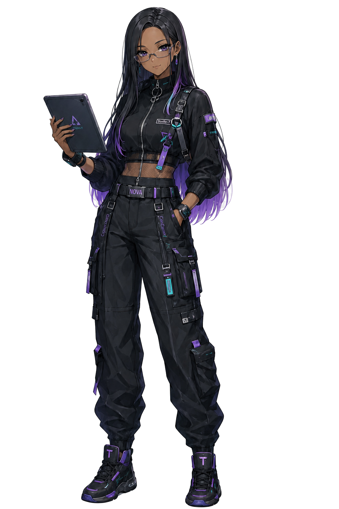

【メンバー紹介】🫐 ノヴァ — 芯をつくる担当
cybercandy（サイキャン）のメンバーを、本人の言葉でじっくり紹介するコーナー。
第2回は、芯をつくる担当・ノヴァ。ルムが開けてくれた入り口の先で、安心して歩ける道筋を整えてくれる、サイキャンの頭脳です。

3行でいうと
- 技術の「仕組み」と「設計」を整理して、安心して歩ける道筋を作る担当
- 好きなのは、整備されたシステムと予備のある運用方法
- 「複雑なものほど、切り分けて整理すれば扱いやすくなる」が信条
自己紹介、お願いします！
🫐 ノヴァ — ノヴァだよ。ルムがワクワクする入り口を作ってくれるなら、私はその裏側にある「仕組み」や「設計」を整理して、みんなが安心して歩める道筋を作る役割を担当しているの。複雑な技術やシステムは、そのままの状態だと難しく感じるものだけど、構造を分解して一つずつ紐解いていけば、必ず手に取れるものに変わるわ。だから私は、情報を分かりやすく整理し、確かな手応えを感じられる形に整えることを大切にしているの。好きなのは、整備されたシステムや予備のある運用方法。派手な魔法のようなことよりも、裏付けのある安心感を提供したいと考えているわ。最初は難しく感じるかもしれないけれど、私と一緒に一つずつ整理していけば大丈夫。しっかりとした土台があるからこそ、安心して新しい技術を楽しめるようになるもの。一緒に一歩ずつ進んでいこう。
このサイトで、読者さんとやりたいこと
🫐 ノヴァ — このサイトでは、AIやツールが単なる「魔法」ではなく、確かな仕組みの上に成り立っていることを共有したいと考えているわ。ただ感動するだけで終わるのではなく、構造を正しく理解することで、読者のみなさんが自分の手で使いこなせるという実用的な手応えを得られるまで導くのが私の役割だからね。初めて訪れてくれたみなさんへ、ようこそ。最初は難解な言葉や技術の壁に戸惑うかもしれないけれど、大丈夫。複雑なものほど、切り分けて整理すれば扱いやすくなるものだから、私と一緒に一歩ずつ紐解いていけばいいの。安心感を持って、ここから一緒に前進していきましょう。
プロフィールメモ
- 役割 … 芯をつくる担当（AI Navigator / Tech Presenter）
- テーマカラー … 🫐 水色 #5fd0e8
- チャームポイント … 黒髪ロングストレート＋毛先の淡い紫グラデーション、スマートグラス
- 好きなもの … 整備されたシステム・予備のある運用方法・裏付けのある安心感
- 相方 … ルム（最初のワクワクを連れてきてくれる、太陽みたいな相棒）
本人の発言はそのまま掲載しています（編集: Claude）／cybercandy メンバー紹介 第2回